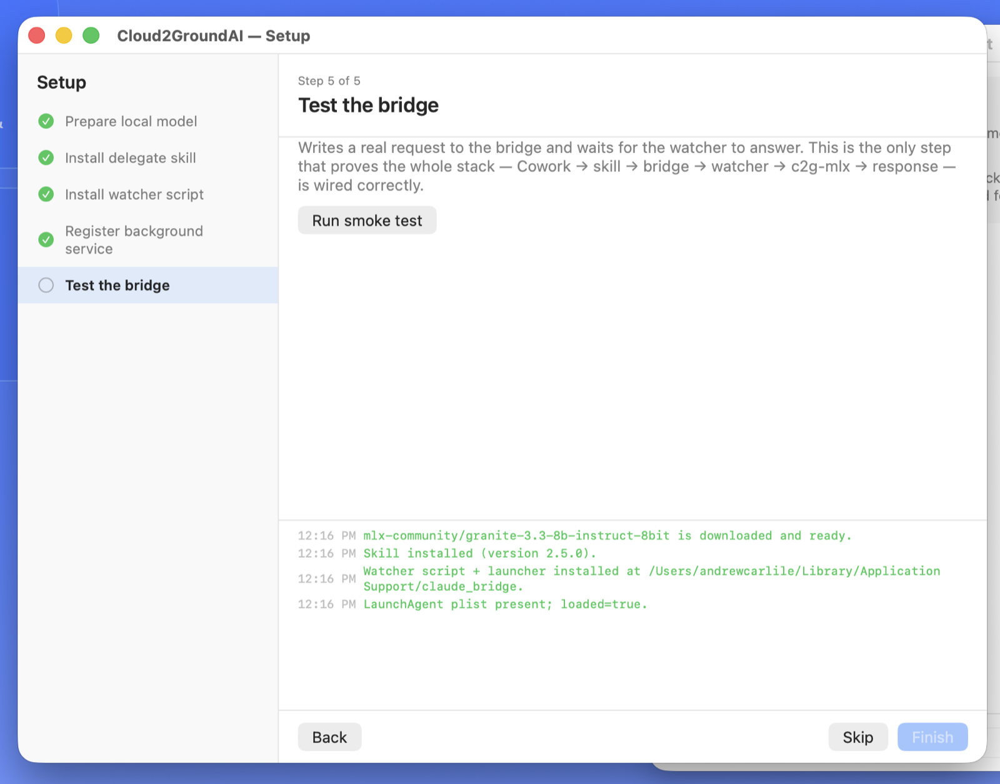
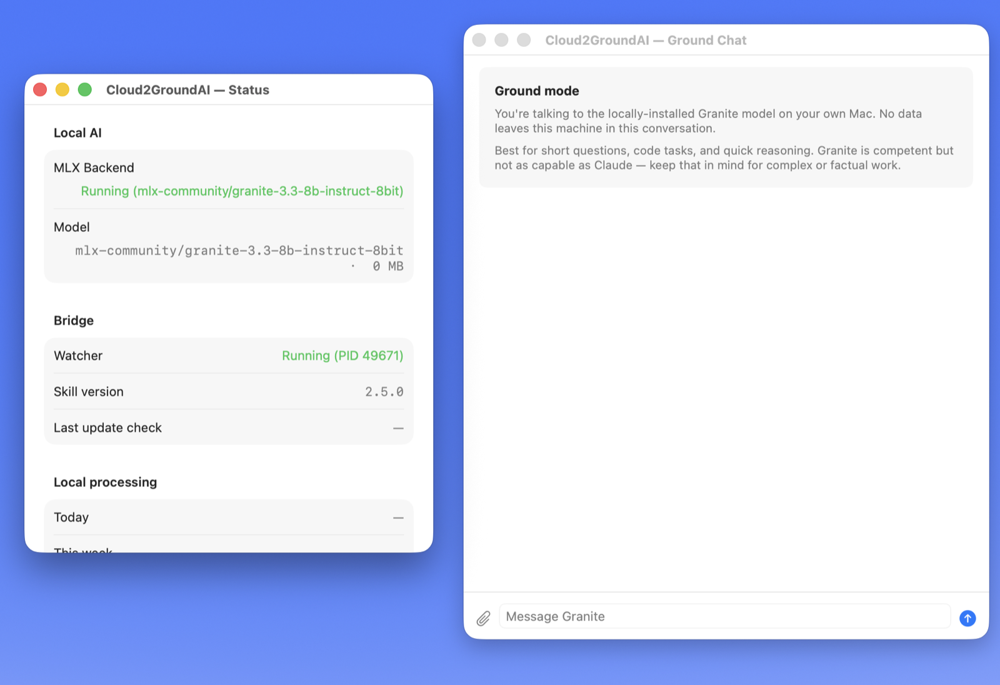
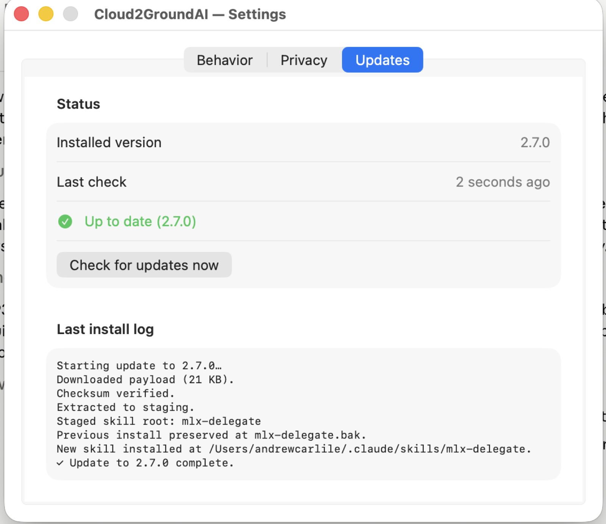

An AI bridge that shifts heavy compute off datacenters and onto your own local machine — potentially renewable-powered.
Download for Mac — free preview
Apple Silicon · macOS 14+ · signed & notarized. 16 GB memory minimum, 24 GB recommended. Requires your own Claude account.
Carlano builds engineering that helps the planet and people — practical systems that cut waste and ease resource load.
Cloud2GroundAI is a bridge that lets a cloud assistant delegate heavy, mechanical work to a capable local model running on the user's own machine. The expensive token generation happens on the ground — off of datacenters and on your own local machine — quieter on cost, lighter on the grid, and clear about when delegation actually helps.
Delegated code can be verified automatically before it comes back. One line in the request states what the result should be, and Cloud2GroundAI runs the generated code against it — catching an invented function that would crash on first use, or a calculation that runs cleanly and quietly returns the wrong number. The cloud assistant still reviews the result; your own machine proves it actually runs.
Power tracks work. When nothing is being delegated, Cloud2GroundAI costs effectively nothing — a fraction of one percent of a single processor core. The local model is held in memory only while it is useful: unloaded quickly when you are on battery, kept warm while you are plugged in, since keeping it ready costs little on wall power and real battery life otherwise.
While the model works it lives entirely in RAM, in memory the system cannot page out to storage. It is never written to your SSD, so it causes no drive wear from swapping. The trade-off is worth stating plainly: while loaded it holds around 8.5 GB that other applications cannot reclaim, so a Mac with memory to spare will feel considerably better than one already running close to full.



Questions, collaborations, or interest in the project — reach out directly.
carlanotech@pm.me